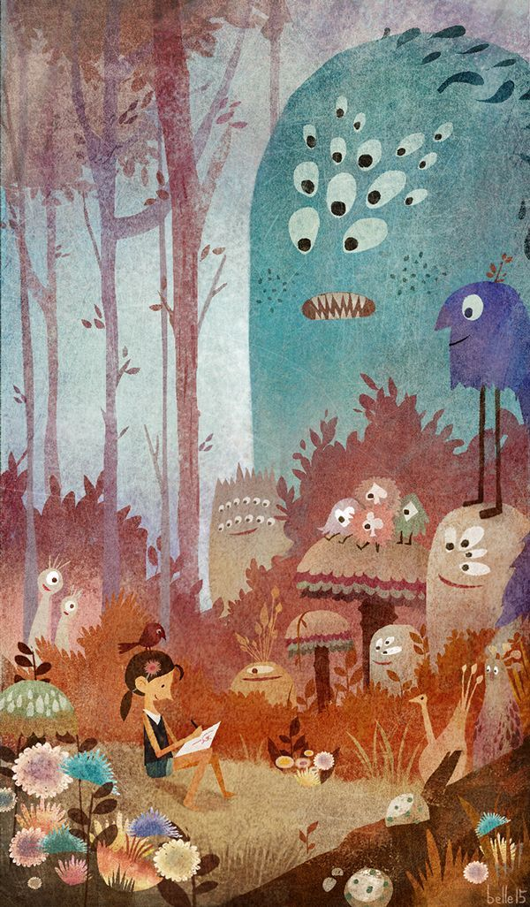

| echo | my description | my instruct | my sport |
| I hope i can make a good performance today. Im confident that I can succeed. Now i will introduce myself briefly I am 22 years old,born in heilongjiang province . I was stady in university. my major is management. I spend most of my time on study,i have passed CET4 . and i have acquired basic knowledge of my major during my school time. i will work hard in thesefields ,patent ,trademark, copyright, on the base of my years study in department of p&p, my character? i cannot describe it well, but i know i am optimistic and confident. sometimes i prefer to stay alone, reading, listening to music, but i am not lonely, i like to chat with my classmates, almost talk everything ,my favorite pastime is valleyball,playing cards or surf online. through college life,i learn how to balance between study and entertainment. by the way, i was a actor of our amazing drama club. i had a few glorious memory on stage. that is my pride. That¨s all. Thank you for giving me the chance. my interest: 1.dance 2.sing songs 3.running 4.read books 5.listionto music my shorts: 1.shy
|
 | ||